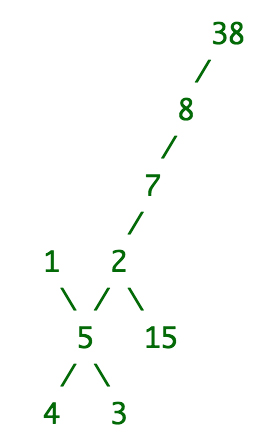

Graph Challenge Have the function GraphChallenge(strArr) read strArr which will be a representation of an undirected graph in a form similar to an adjacency list. Each element in the input will contain an integer which will represent the population for that city, and then that will be followed by a comma separated list of its neighboring cities and their populations (these will be separated by a colon). For example: strArr may be ["1:[5]", "4:[5]", "3:[5]", "5:[1,4,3,2]", "2:[5,15,7]", "7:[2,8]", "8:[7,38]", "15:[2]", "38:[8]"]. This graph then looks like the following picture:
Each node represents the population of that city and each edge represents a road to that city. Your goal is to determine the maximum traffic that would occur via a single road if everyone decided to go to that city. For example: if every single person in all the cities decided to go to city 7, then via the upper road the number of people coming in would be (8 + 38) = 46. If all the cities beneath city 7 decided to go to it via the lower road, the number of people coming in would be (2 + 15 + 1 + 3 + 4 + 5) = 30. So the maximum traffic coming into the city 7 would be 46 because the maximum value of (30, 46) = 46.
Your program should determine the maximum traffic for every single city and return the answers in a comma separated string in the format: city:max_traffic,city:max_traffic,... The cities should be outputted in sorted order by the city number. For the above example, the output would therefore be: 1:82,2:53,3:80,4:79,5:70,7:46,8:38,15:68,38:45. The cities will all be unique positive integers and there will not be any cycles in the graph. There will always be at least 2 cities in the graph.
Examples Input: ["1:[5]", "2:[5]", "3:[5]", "4:[5]", "5:[1,2,3,4]"] Output: 1:14,2:13,3:12,4:11,5:4 Input: ["1:[5]", "2:[5,18]", "3:[5,12]", "4:[5]", "5:[1,2,3,4]", "18:[2]", "12:[3]"] Output: 1:44,2:25,3:30,4:41,5:20,12:33,18:27